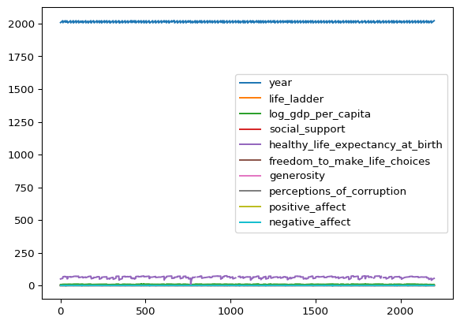
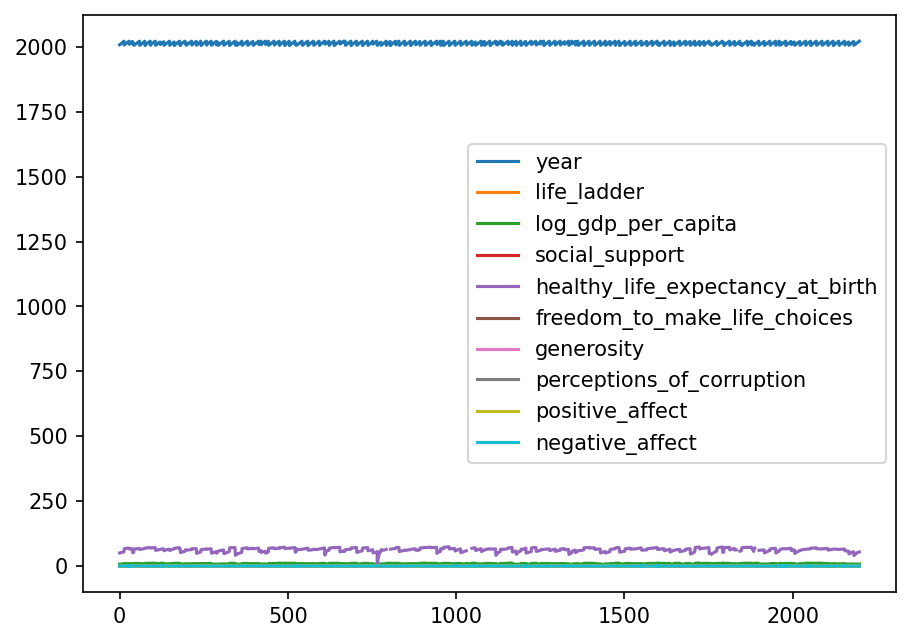
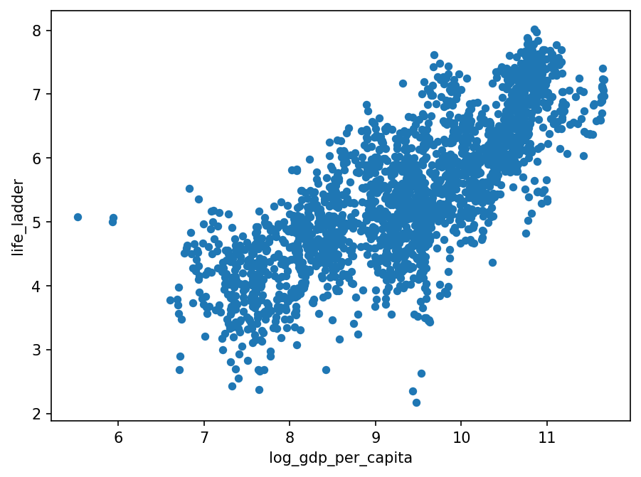

import pandas as pd
import seaborn as snsLab: Intro to Pandas
probability
Welcome to the Pandas tutorial lab. This is the first notebook of the exploratory data analysis (EDA) series, where you will get hands-on practice applying skills from the course to a real data problem. Here you will see and try out some basics of Pandas and get familiar with useful functions that you will use across other labs and assignments.
For demonstration purposes, you will use the World Happiness Report dataset. The dataset consists of 2199 rows, where each row contains various happiness-related metrics for a certain country in a given year. You will use this dataset to understand some fundamental operations in Pandas.
Download the dataset: world_happiness.csv
Importing Libraries
The most important library you will need is Pandas. You will also use the Seaborn library for plotting. To import them, run the cell below.
Loading Data
Now that you have the Pandas library imported, you need to load your dataset. The dataset is saved as a .csv file and you can load it by calling pd.read_csv(filename). When you load the dataset, it will be stored as a DataFrame type. This is the most commonly used Pandas data structure that you will use throughout this and other notebooks.
df = pd.read_csv('../../media/world_happiness.csv')Basic Operations
Viewing Data with head() and tail()
You can use df.head() and df.tail() to view the first or last rows of the DataFrame respectively. By default, these show five rows, but you can specify the number of rows as a parameter.
df.head()| Country name | year | Life Ladder | Log GDP per capita | Social support | Healthy life expectancy at birth | Freedom to make life choices | Generosity | Perceptions of corruption | Positive affect | Negative affect | |
|---|---|---|---|---|---|---|---|---|---|---|---|
| 0 | Afghanistan | 2008 | 3.724 | 7.350 | 0.451 | 50.5 | 0.718 | 0.168 | 0.882 | 0.414 | 0.258 |
| 1 | Afghanistan | 2009 | 4.402 | 7.509 | 0.552 | 50.8 | 0.679 | 0.191 | 0.850 | 0.481 | 0.237 |
| 2 | Afghanistan | 2010 | 4.758 | 7.614 | 0.539 | 51.1 | 0.600 | 0.121 | 0.707 | 0.517 | 0.275 |
| 3 | Afghanistan | 2011 | 3.832 | 7.581 | 0.521 | 51.4 | 0.496 | 0.164 | 0.731 | 0.480 | 0.267 |
| 4 | Afghanistan | 2012 | 3.783 | 7.661 | 0.521 | 51.7 | 0.531 | 0.238 | 0.776 | 0.614 | 0.268 |
df.tail(2)| Country name | year | Life Ladder | Log GDP per capita | Social support | Healthy life expectancy at birth | Freedom to make life choices | Generosity | Perceptions of corruption | Positive affect | Negative affect | |
|---|---|---|---|---|---|---|---|---|---|---|---|
| 2197 | Zimbabwe | 2021 | 3.155 | 7.657 | 0.685 | 54.050 | 0.668 | -0.076 | 0.757 | 0.610 | 0.242 |
| 2198 | Zimbabwe | 2022 | 3.296 | 7.670 | 0.666 | 54.525 | 0.652 | -0.070 | 0.753 | 0.641 | 0.191 |
Index and Columns
In a DataFrame, data is stored in a two-dimensional grid (rows and columns). The rows are indexed and the columns are named. You can inspect these with df.index and df.columns.
df.indexRangeIndex(start=0, stop=2199, step=1)df.columnsIndex(['Country name', 'year', 'Life Ladder', 'Log GDP per capita',
'Social support', 'Healthy life expectancy at birth',
'Freedom to make life choices', 'Generosity',
'Perceptions of corruption', 'Positive affect', 'Negative affect'],
dtype='str')The column names contain spaces, which can cause difficulties when accessing them. A common practice is to replace spaces with underscores and make everything lowercase. You can rename columns using df.rename() with a dictionary mapping old names to new names.
# Build a dictionary mapping old column names to new ones (lowercase, underscores for spaces)
columns_to_rename = {i: "_".join(i.split(" ")).lower() for i in df.columns}
# Rename the columns
df = df.rename(columns=columns_to_rename)
df.head()| country_name | year | life_ladder | log_gdp_per_capita | social_support | healthy_life_expectancy_at_birth | freedom_to_make_life_choices | generosity | perceptions_of_corruption | positive_affect | negative_affect | |
|---|---|---|---|---|---|---|---|---|---|---|---|
| 0 | Afghanistan | 2008 | 3.724 | 7.350 | 0.451 | 50.5 | 0.718 | 0.168 | 0.882 | 0.414 | 0.258 |
| 1 | Afghanistan | 2009 | 4.402 | 7.509 | 0.552 | 50.8 | 0.679 | 0.191 | 0.850 | 0.481 | 0.237 |
| 2 | Afghanistan | 2010 | 4.758 | 7.614 | 0.539 | 51.1 | 0.600 | 0.121 | 0.707 | 0.517 | 0.275 |
| 3 | Afghanistan | 2011 | 3.832 | 7.581 | 0.521 | 51.4 | 0.496 | 0.164 | 0.731 | 0.480 | 0.267 |
| 4 | Afghanistan | 2012 | 3.783 | 7.661 | 0.521 | 51.7 | 0.531 | 0.238 | 0.776 | 0.614 | 0.268 |
Data Types
One powerful feature of DataFrames is that columns can have different data types (dtypes). You can inspect them with df.dtypes.
df.dtypescountry_name str
year int64
life_ladder float64
log_gdp_per_capita float64
social_support float64
healthy_life_expectancy_at_birth float64
freedom_to_make_life_choices float64
generosity float64
perceptions_of_corruption float64
positive_affect float64
negative_affect float64
dtype: objectIf your data has incorrectly formatted types, you can change them manually using df.astype().
# List all columns that should be floats
float_columns = [i for i in df.columns if i not in ["country_name", "year"]]
# Change the type of all float columns to float
df = df.astype({i: float for i in float_columns})
df.dtypescountry_name str
year int64
life_ladder float64
log_gdp_per_capita float64
social_support float64
healthy_life_expectancy_at_birth float64
freedom_to_make_life_choices float64
generosity float64
perceptions_of_corruption float64
positive_affect float64
negative_affect float64
dtype: objectThe df.info() method provides additional information, including the number of non-null values per column.
df.info()<class 'pandas.DataFrame'>
RangeIndex: 2199 entries, 0 to 2198
Data columns (total 11 columns):
# Column Non-Null Count Dtype
--- ------ -------------- -----
0 country_name 2199 non-null str
1 year 2199 non-null int64
2 life_ladder 2199 non-null float64
3 log_gdp_per_capita 2179 non-null float64
4 social_support 2186 non-null float64
5 healthy_life_expectancy_at_birth 2145 non-null float64
6 freedom_to_make_life_choices 2166 non-null float64
7 generosity 2126 non-null float64
8 perceptions_of_corruption 2083 non-null float64
9 positive_affect 2175 non-null float64
10 negative_affect 2183 non-null float64
dtypes: float64(9), int64(1), str(1)
memory usage: 189.1 KBSelecting Columns
One way to select a single column is dot notation: df.column_name. This is why it was a good idea to rename columns without spaces. This returns a Pandas Series.
x = df.life_ladder
print(f"type(x):\n {type(x)}\n")
print(f"x:\n{x}")type(x):
<class 'pandas.Series'>
x:
0 3.724
1 4.402
2 4.758
3 3.832
4 3.783
...
2194 3.616
2195 2.694
2196 3.160
2197 3.155
2198 3.296
Name: life_ladder, Length: 2199, dtype: float64Another way is to use square brackets with the column name as a string, similar to accessing a dictionary entry.
x = df["life_ladder"]
print(f"type(x):\n {type(x)}\n")
print(f"x:\n{x}")type(x):
<class 'pandas.Series'>
x:
0 3.724
1 4.402
2 4.758
3 3.832
4 3.783
...
2194 3.616
2195 2.694
2196 3.160
2197 3.155
2198 3.296
Name: life_ladder, Length: 2199, dtype: float64Passing a list of column names selects multiple columns and returns a DataFrame (rather than a Series).
x = df[["life_ladder"]]
print(f"type(x):\n {type(x)}\n")
print(f"x:\n{x}")type(x):
<class 'pandas.DataFrame'>
x:
life_ladder
0 3.724
1 4.402
2 4.758
3 3.832
4 3.783
... ...
2194 3.616
2195 2.694
2196 3.160
2197 3.155
2198 3.296
[2199 rows x 1 columns]Selecting Rows
Passing a slice selects matching rows and returns a DataFrame with all columns.
df[2:5]| country_name | year | life_ladder | log_gdp_per_capita | social_support | healthy_life_expectancy_at_birth | freedom_to_make_life_choices | generosity | perceptions_of_corruption | positive_affect | negative_affect | |
|---|---|---|---|---|---|---|---|---|---|---|---|
| 2 | Afghanistan | 2010 | 4.758 | 7.614 | 0.539 | 51.1 | 0.600 | 0.121 | 0.707 | 0.517 | 0.275 |
| 3 | Afghanistan | 2011 | 3.832 | 7.581 | 0.521 | 51.4 | 0.496 | 0.164 | 0.731 | 0.480 | 0.267 |
| 4 | Afghanistan | 2012 | 3.783 | 7.661 | 0.521 | 51.7 | 0.531 | 0.238 | 0.776 | 0.614 | 0.268 |
Boolean Indexing
What if you are interested only in data from a certain year, or where a value in a column is greater than some threshold? You can use boolean indexing.
# Select rows where year equals 2022
df[df["year"] == 2022]| country_name | year | life_ladder | log_gdp_per_capita | social_support | healthy_life_expectancy_at_birth | freedom_to_make_life_choices | generosity | perceptions_of_corruption | positive_affect | negative_affect | |
|---|---|---|---|---|---|---|---|---|---|---|---|
| 13 | Afghanistan | 2022 | 1.281 | NaN | 0.228 | 54.875 | 0.368 | NaN | 0.733 | 0.206 | 0.576 |
| 28 | Albania | 2022 | 5.212 | 9.626 | 0.724 | 69.175 | 0.802 | -0.066 | 0.846 | 0.547 | 0.255 |
| 59 | Argentina | 2022 | 6.261 | 10.011 | 0.893 | 67.250 | 0.825 | -0.128 | 0.810 | 0.724 | 0.284 |
| 75 | Armenia | 2022 | 5.382 | 9.668 | 0.811 | 67.925 | 0.790 | -0.154 | 0.705 | 0.531 | 0.549 |
| 91 | Australia | 2022 | 7.035 | 10.854 | 0.942 | 71.125 | 0.854 | 0.153 | 0.545 | 0.711 | 0.244 |
| ... | ... | ... | ... | ... | ... | ... | ... | ... | ... | ... | ... |
| 2104 | Uruguay | 2022 | 6.671 | 10.084 | 0.905 | 67.500 | 0.878 | -0.052 | 0.631 | 0.775 | 0.267 |
| 2120 | Uzbekistan | 2022 | 6.016 | 8.990 | 0.879 | 65.600 | 0.959 | 0.309 | 0.616 | 0.741 | 0.225 |
| 2137 | Venezuela | 2022 | 5.949 | NaN | 0.899 | 63.875 | 0.770 | NaN | 0.798 | 0.754 | 0.292 |
| 2154 | Vietnam | 2022 | 6.267 | 9.333 | 0.879 | 65.600 | 0.975 | -0.179 | 0.703 | 0.774 | 0.108 |
| 2198 | Zimbabwe | 2022 | 3.296 | 7.670 | 0.666 | 54.525 | 0.652 | -0.070 | 0.753 | 0.641 | 0.191 |
114 rows × 11 columns
After filtering, the index has gaps. You can reset it with reset_index(drop=True) if you want the index to correspond to actual row numbers.
new_df = df[df["year"] == 2022]
new_df = new_df.reset_index(drop=True)
new_df| country_name | year | life_ladder | log_gdp_per_capita | social_support | healthy_life_expectancy_at_birth | freedom_to_make_life_choices | generosity | perceptions_of_corruption | positive_affect | negative_affect | |
|---|---|---|---|---|---|---|---|---|---|---|---|
| 0 | Afghanistan | 2022 | 1.281 | NaN | 0.228 | 54.875 | 0.368 | NaN | 0.733 | 0.206 | 0.576 |
| 1 | Albania | 2022 | 5.212 | 9.626 | 0.724 | 69.175 | 0.802 | -0.066 | 0.846 | 0.547 | 0.255 |
| 2 | Argentina | 2022 | 6.261 | 10.011 | 0.893 | 67.250 | 0.825 | -0.128 | 0.810 | 0.724 | 0.284 |
| 3 | Armenia | 2022 | 5.382 | 9.668 | 0.811 | 67.925 | 0.790 | -0.154 | 0.705 | 0.531 | 0.549 |
| 4 | Australia | 2022 | 7.035 | 10.854 | 0.942 | 71.125 | 0.854 | 0.153 | 0.545 | 0.711 | 0.244 |
| ... | ... | ... | ... | ... | ... | ... | ... | ... | ... | ... | ... |
| 109 | Uruguay | 2022 | 6.671 | 10.084 | 0.905 | 67.500 | 0.878 | -0.052 | 0.631 | 0.775 | 0.267 |
| 110 | Uzbekistan | 2022 | 6.016 | 8.990 | 0.879 | 65.600 | 0.959 | 0.309 | 0.616 | 0.741 | 0.225 |
| 111 | Venezuela | 2022 | 5.949 | NaN | 0.899 | 63.875 | 0.770 | NaN | 0.798 | 0.754 | 0.292 |
| 112 | Vietnam | 2022 | 6.267 | 9.333 | 0.879 | 65.600 | 0.975 | -0.179 | 0.703 | 0.774 | 0.108 |
| 113 | Zimbabwe | 2022 | 3.296 | 7.670 | 0.666 | 54.525 | 0.652 | -0.070 | 0.753 | 0.641 | 0.191 |
114 rows × 11 columns
Summary Statistics
Pandas provides a simple way to calculate summary statistics using describe(). It shows count, mean, standard deviation, min, 25th percentile, 50th percentile (median), 75th percentile, and max for each numeric column.
df.describe()| year | life_ladder | log_gdp_per_capita | social_support | healthy_life_expectancy_at_birth | freedom_to_make_life_choices | generosity | perceptions_of_corruption | positive_affect | negative_affect | |
|---|---|---|---|---|---|---|---|---|---|---|
| count | 2199.000000 | 2199.000000 | 2179.000000 | 2186.000000 | 2145.000000 | 2166.000000 | 2126.000000 | 2083.000000 | 2175.000000 | 2183.000000 |
| mean | 2014.161437 | 5.479227 | 9.389760 | 0.810681 | 63.294582 | 0.747847 | 0.000091 | 0.745208 | 0.652148 | 0.271493 |
| std | 4.718736 | 1.125527 | 1.153402 | 0.120953 | 6.901104 | 0.140137 | 0.161079 | 0.185835 | 0.105913 | 0.086872 |
| min | 2005.000000 | 1.281000 | 5.527000 | 0.228000 | 6.720000 | 0.258000 | -0.338000 | 0.035000 | 0.179000 | 0.083000 |
| 25% | 2010.000000 | 4.647000 | 8.500000 | 0.747000 | 59.120000 | 0.656250 | -0.112000 | 0.688000 | 0.572000 | 0.208000 |
| 50% | 2014.000000 | 5.432000 | 9.499000 | 0.836000 | 65.050000 | 0.770000 | -0.023000 | 0.800000 | 0.663000 | 0.261000 |
| 75% | 2018.000000 | 6.309500 | 10.373500 | 0.905000 | 68.500000 | 0.859000 | 0.092000 | 0.869000 | 0.738000 | 0.323000 |
| max | 2022.000000 | 8.019000 | 11.664000 | 0.987000 | 74.475000 | 0.985000 | 0.703000 | 0.983000 | 0.884000 | 0.705000 |
Keep in mind that not all summary statistics always make sense. You have data for many different countries across different years. Are there the same number of datapoints for each country or year? Countries have vastly different populations, so simply averaging numbers out may not tell the full story.
Plotting
DataFrame.plot()
If you want to plot data, you can use df.plot(). By default it uses the index as the x-axis and plots all numeric columns as y-axes.
df.plot()
In this case, the plot is not very useful because the index has no specific meaning, and column values differ greatly (years around 2000 vs. other columns with much lower values).
Seaborn Scatterplot
A more useful approach is to create a scatter plot with specifically chosen variables. Below, you will plot log GDP per capita on the x-axis and the life ladder (self-assessed life quality on a scale of 1 to 10) on the y-axis, filtering for selected countries and coloring by country name.
# Select a few countries of interest
countries = ["Brazil", "Finland", "Japan", "United States", "India"]
df_selected = df[df["country_name"].isin(countries)]
# Create a scatterplot with color by country
sns.scatterplot(data=df_selected, x="log_gdp_per_capita", y="life_ladder", hue="country_name")
You can see that there is some sort of trend between the wealth of a country and the happiness of its population. Wealthier countries tend to have higher life ladder scores.
Pairplot
You can also use sns.pairplot() to visualize pairwise relationships between all numeric variables in the DataFrame. This can be useful for initial exploration, though it may take a while with larger datasets.
sns.pairplot(df)
Operations on Columns
Creating New Columns with Arithmetic
You can create new columns using arithmetic operations on existing columns. This is a powerful tool for feature engineering.
# Create a new column: sum of year and life_ladder (not meaningful, just for demonstration)
df["this_column_makes_no_sense"] = df["year"] + df["life_ladder"]
# Create a new column: difference between positive and negative affect
df["net_affect_difference"] = df["positive_affect"] - df["negative_affect"]
df.head()| country_name | year | life_ladder | log_gdp_per_capita | social_support | healthy_life_expectancy_at_birth | freedom_to_make_life_choices | generosity | perceptions_of_corruption | positive_affect | negative_affect | this_column_makes_no_sense | net_affect_difference | |
|---|---|---|---|---|---|---|---|---|---|---|---|---|---|
| 0 | Afghanistan | 2008 | 3.724 | 7.350 | 0.451 | 50.5 | 0.718 | 0.168 | 0.882 | 0.414 | 0.258 | 2011.724 | 0.156 |
| 1 | Afghanistan | 2009 | 4.402 | 7.509 | 0.552 | 50.8 | 0.679 | 0.191 | 0.850 | 0.481 | 0.237 | 2013.402 | 0.244 |
| 2 | Afghanistan | 2010 | 4.758 | 7.614 | 0.539 | 51.1 | 0.600 | 0.121 | 0.707 | 0.517 | 0.275 | 2014.758 | 0.242 |
| 3 | Afghanistan | 2011 | 3.832 | 7.581 | 0.521 | 51.4 | 0.496 | 0.164 | 0.731 | 0.480 | 0.267 | 2014.832 | 0.213 |
| 4 | Afghanistan | 2012 | 3.783 | 7.661 | 0.521 | 51.7 | 0.531 | 0.238 | 0.776 | 0.614 | 0.268 | 2015.783 | 0.346 |
The first new column does not make much sense (it just adds year to life ladder). The second one finds the net difference between positive and negative affect, which could reveal interesting patterns.
Using apply() with Lambda and Custom Functions
If you want to perform more advanced operations on columns, you can use df.apply(), which lets you apply practically any function to a column.
# Using apply() with a lambda function
# Rescale life_ladder to values between 0 and 1
df['life_ladder_rescaled'] = df['life_ladder'].apply(lambda x: x / 10)
# Using apply() with a custom function
def my_function(x):
y = x * 2
return y
# Apply the function to double life_ladder values
df['my_function'] = df['life_ladder'].apply(my_function)
df.head()| country_name | year | life_ladder | log_gdp_per_capita | social_support | healthy_life_expectancy_at_birth | freedom_to_make_life_choices | generosity | perceptions_of_corruption | positive_affect | negative_affect | this_column_makes_no_sense | net_affect_difference | life_ladder_rescaled | my_function | |
|---|---|---|---|---|---|---|---|---|---|---|---|---|---|---|---|
| 0 | Afghanistan | 2008 | 3.724 | 7.350 | 0.451 | 50.5 | 0.718 | 0.168 | 0.882 | 0.414 | 0.258 | 2011.724 | 0.156 | 0.3724 | 7.448 |
| 1 | Afghanistan | 2009 | 4.402 | 7.509 | 0.552 | 50.8 | 0.679 | 0.191 | 0.850 | 0.481 | 0.237 | 2013.402 | 0.244 | 0.4402 | 8.804 |
| 2 | Afghanistan | 2010 | 4.758 | 7.614 | 0.539 | 51.1 | 0.600 | 0.121 | 0.707 | 0.517 | 0.275 | 2014.758 | 0.242 | 0.4758 | 9.516 |
| 3 | Afghanistan | 2011 | 3.832 | 7.581 | 0.521 | 51.4 | 0.496 | 0.164 | 0.731 | 0.480 | 0.267 | 2014.832 | 0.213 | 0.3832 | 7.664 |
| 4 | Afghanistan | 2012 | 3.783 | 7.661 | 0.521 | 51.7 | 0.531 | 0.238 | 0.776 | 0.614 | 0.268 | 2015.783 | 0.346 | 0.3783 | 7.566 |
The lambda function divides each life ladder value by 10, rescaling to a 0-1 range. The custom function my_function simply doubles each value. You can define any logic you need inside these functions.
Congratulations on finishing this lab. If you understand the code above, you are well prepared to start working on assignments and other labs throughout the course that use Pandas. If you need a refresher, come back to this lab and review the skills taught here.